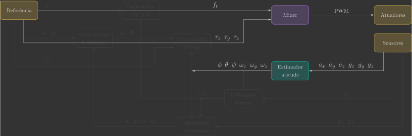
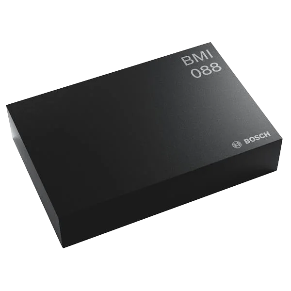
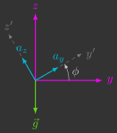
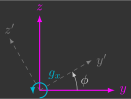
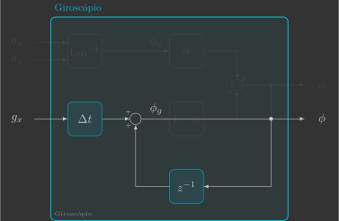
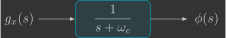
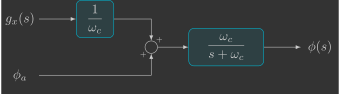
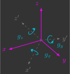

Estimador de atitude
Nesta secção você irá implementar o estimador de atitude, que estima os ângulos de Euler \(\phi\), \(\theta\) e \(\psi\) e velocidades angulares \(\omega_x\), \(\omega_y\) e \(\omega_z\) a partir das leituras do acelerômetro \(a_x\), \(a_y\) e \(a_z\) e do giroscópio \(g_x\), \(g_y\) e \(g_z\).

Para isto, serão implementadas duas novas funções:
sensors()attitudeEstimator()
Implementação
Para começar, copie e cole o arquivo mixer.c e renomeie ele para attitude_estimator.c.
Definições
Variáveis globais
Declare mais algumas variáveis globais, que são as variáveis que entram e saem da função do estimador de atitude.
// Sensors
float ax, ay, az; // Accelerometer [m/s^2]
float gx, gy, gz; // Gyroscope [rad/s]
// System states
float phi, theta, psi; // Euler angles [rad]
float wx, wy, wz; // Angular velocities [rad/s]
Variáveis de registro
Declare também algumas variáveis que serão utilizados para registrar os valores dos ângulos de Euler e enviar eles ao Crazyflie Client, para que seja possível visualizar nossa estimativa em tempo real(1).
- Nós não utilizamos as próprias variáveis declaradas anteriormente pois o Crazyflie Client trabalha com ângulos em graus e não em radianos.
// Auxiliary variables for logging Euler angles (CFClient uses degrees and not radians)
float log_phi, log_theta, log_psi;
// Logging group that stream variables to CFClient.
LOG_GROUP_START(stateEstimate)
LOG_ADD_CORE(LOG_FLOAT, roll, &log_phi)
LOG_ADD_CORE(LOG_FLOAT, pitch, &log_theta)
LOG_ADD_CORE(LOG_FLOAT, yaw, &log_psi)
LOG_GROUP_STOP(stateEstimate)
Loop principal
Inclua no seu loop principal a chamada das funções sensors() e attitudeEstimator()(1).
- Apesar dessas funções serem detalhadas a seguir, no código elas devem ser implementadas antes do loop principal.
// Main application task
void appMain(void *param)
{
// Infinite loop (runs at 200Hz)
while (true)
{
reference(); // Read reference setpoints (from Crazyflie Client)
sensors(); // Read raw sensor measurements
attitudeEstimator(); // Estimate orientation (roll/pitch/yaw) from IMU sensor
mixer(); // Convert desired force/torques into motor PWM
actuators(); // Send commands to motors
vTaskDelay(pdMS_TO_TICKS(5)); // Loop delay (5 ms)
}
}
Funções
Sensores
A função sensors() pega as leituras do acelerômetro e giroscópio e armazena elas nas variáveis globais previamente declaradas.
// Get sensor readings from estimator module
void sensors()
{
// Declare variable that store the most recent measurement from estimator
static measurement_t measurement;
// Retrieve the current measurement from estimator module
while (estimatorDequeue(&measurement))
{
switch (measurement.type)
{
// Get accelerometer sensor readings and convert [G's -> m/s^2]
case MeasurementTypeAcceleration:
ax = -measurement.data.acceleration.acc.x * g;
ay = -measurement.data.acceleration.acc.y * g;
az = -measurement.data.acceleration.acc.z * g;
break;
// Get gyroscope sensor readings and convert [deg/s -> rad/s]
case MeasurementTypeGyroscope:
gx = measurement.data.gyroscope.gyro.x * pi / 180.0f;
gy = measurement.data.gyroscope.gyro.y * pi / 180.0f;
gz = measurement.data.gyroscope.gyro.z * pi / 180.0f;
break;
default:
break;
}
}
}
Você pode simplesmente copiar e colar o código acima. Se quiser entender ele melhor, volte na secção dos sensores.
Estimador de atitude
A função attitudeEstimator() é quem estima os ângulos de Euler e velocidades angulares a partir das leituras do acelerômetro e do giroscópio.
// Estimate orientation from IMU sensor
void attitudeEstimator()
{
}
Ela está em branco pois será implementada em etapas a seguir. Inicialmente, você irá considerar apenas a dinâmica 2D e estimar um único ângulo de Euler. Só no final você irá considerar a dinâmica 3D e estimar todos os ângulos de Euler e velocidades angulares.
A IMU ("Inertial Measurement Unit") do Crazyflie 2.1 Brushless é a BMI088 da Bosch. Ela fica localizada na parte superior do drone, escondida embaixo da bateria.

Esse sensor utiliza tecnologia MEMS (``Micro-Electro-Mechanical Systems''), que permite medir aceleração linear e velocidade angular através do movimento de minúsculos elementos mecânicos integrados ao chip. Essas medições são obtidas de forma totalmente eletrônica e com alta taxa de amostragem, possibilitando estimar o movimento e a orientação do drone em tempo real.
Você começará implementando um estimador baseado apenas no acelerômetro, seguido de outro que utiliza apenas o giroscópio. Após compreender as vantagens e limitações de cada sensor isoladamente, ambos serão combinados de forma inteligente — resultando em um estimador mais robusto e preciso, que explorará o melhor dos dois mundos.
Acelerômetro
Acelerômetros inerciais são sensores que medem aceleração linear. Eles são compostos por um corpo de prova conectada a um invólucro através de uma mola e um amortecedor:

Quando o invólucro sofre uma aceleração \({\color{magenta}\ddot{x}}\), o corpo dentro do invólucro sofre um deslocamento \({\color{cyan}x'}\). Medindo o deslocamento do corpo \({\color{cyan}x'}\), é possível inferir a aceleração sofrida pelo invólucro \({\color{magenta}\ddot{x}}\).

Ao montarmos três acelerômetros perpendiculares entre si, ou seja, um alinhado com cada eixo, temos o que é chamado de acelerômetro de 3 eixos, que consegue medir a aceleração linear em todas as direções.
Trigonometria
O acelerômetro está fixo no sistema de coordenadas móvel do drone. Como há sempre a aceleração da gravidade apontando para baixo no sistema de coordenadas inercial, as acelerações \(a_y\) e \(a_z\) em função da gravidade \(g\) e do ângulo \(\phi\) são dadas por:

Dividindo uma equação pela outra, podemos medir o ângulo \(\phi_a\)(1) em função das leituras do acelerômetro \(a_y\) e \(a_z\)(2):
- Usamos o subescrito \(_a\) para deixar claro que esse ângulo foi medido a partir das leituras do acelerômetro.
- Os sinais negativos não foram cortados pois você deverá utilizar a função
atan2fem seu código, para saber em qual quadrante está o seu ângulo.
Vamos começar implementando um estimador de atitude bem simples, cujo ângulo estimado \(\phi\) é dado simplesmente pelo ângulo \(\phi_a\) medido a partir das leituras do acelerômetro \(a_y\) e \(a_z\), conforme o diagrama de blocos abaixo:

Inclua na função attitudeEstimator() uma variável local \(\phi_a\), que corresponde ao ângulo medido a partir das leituras do acelerômetro \(a_y\) e \(a_z\) e, em seguida, atribua ela ao ângulo estimado \(\phi\). Também vamos armazenar o valor dessa estimativa numa variável de registro, para que seja possível visualizá-la no Crazyflie Client.
// Estimate orientation from IMU sensor
void attitudeEstimator()
{
// Measured angle from accelerometer
float phi_a =
// Estimated angle (accelerometer)
phi =
// Auxiliary variables for logging Euler angles (CFClient uses degrees and not radians)
log_phi = phi * 180.0f / pi;
}
Verifique como está sua estimativa, para isso carregue esse programa no drone e utilize o Crazyflie Client para visualizar o resultado.
Resultado esperado
Você deve notar que o estimador implementado é adequado somente para condições estáticas (baixas frequências). Isso se deve ao fato de que, ao movimentar o drone, surgem outras acelerações além da aceleração da gravidade. Essas acelerações acabam sendo um ruído para o nosso estimador, e uma forma de removê-las é através de um filtro passa-baixas.
Filtro passa-baixas
Um filtro passa-baixas é um filtro que atenua sinais superiores a uma determinada frequência de corte \(\omega_c\). Ele é muito utilizado para filtrar ruídos, dado que os mesmos geralmente possuem uma frequência superior ao sinal que está sendo medido.
Dessa forma, para obtermos um ângulo estimado \(\phi\) sem ruídos, vamos passar o ângulo medido pelo acelerômetro \(\phi_a\) por um filtro passa-baixas. No domínino da frequência, isso pode ser representado pelo seguinte diagrama de blocos:

Dado que vamos implementar este filtro em um microcontrolador, torna-se necessário determinar o equivalente discreto do mesmo. Primeiro, vamos obter a equação diferencial correspondente, utilizando a transformada inversa de Laplace:
Em seguida, vamos discretizar a equação diferencial, utilizando o método de Euler implícito(1):
- O método de Euler explícito ("pra frente") utiliza a aproximação \(\frac{d}{dt}x(t) \approx \frac{x(t+\Delta t)-x(t)}{\Delta t}\), equanto que o método de Euler implícito ("pra trás") utiliza a aproximação \(\frac{d}{dt}x(t) \approx \frac{x(t)-x(t-\Delta t)}{\Delta t}\)
Note que um filtro passa-baixas discretizado nada mais é do que uma média ponderada entre o valor antigo de \(\phi\) e o valor medido \(\phi_a\), e a variável \(\alpha\) é exatamente esse fator de ponderação. O mesmo pode ser representado pelo seguinte diagrama de blocos:

A variável \(\alpha\) é chamada de fator de suavização, ela depende da frequência de corte \(\omega_c\) e do intervalo de tempo \(\Delta t\) entre medições:
- Quanto maior for a frequência de corte \(\omega_c\), mais próximo de 1 estará o fator de suavização \(\alpha\) e, consequentemente, mais peso será dado aos valores medidos. Isso é vantajoso pois garante que o sinal estimado convirja mais rápido, no entanto, também deixa passar mais ruído.
- Quanto menor for a frequência de corte \(\omega_c\), mais próximo de 0 estará o fator de suavização \(\alpha\) e, consequentemente, mais peso será dado aos valores antigos. Isso é vantajoso pois deixa passar menos ruído, no entanto, faz com que o sinal estimado convirja mais devagar.
Determinar a frequência de corte \(\omega_c\) ideal, que garante um bom compromisso entre redução de ruído e atraso, é o maior desafio na implementação de um filtro passa-baixas.
Modifique a sua função attitudeEstimator() de modo que agora o ângulo estimado \(\phi\) seja dado por um filtro passa-baixas da medida do acelerômetro \(\phi_a\).
// Estimate orientation from IMU sensor
void attitudeEstimator()
{
// Estimator parameters
static const float wc =
static const float alpha =
// Measured angle from accelerometer
float phi_a =
// Estimated angle (accelerometer with low pass filter)
phi =
// Auxiliary variables for logging Euler angles (CFClient uses degrees and not radians)
log_phi = phi * 180.0f / pi;
}
Experimente valores de 1rad/s, 10rad/s e 100rad/s para a frequência de corte \(\omega_c\) e verifique como isso influencia na sua estimativa. Para isso, carregue esse programa no drone e utilize o Crazyflie Client para visualizar o resultado.
Resultado esperado
Você deve notar que, mesmo no melhor dos casos, o estimador implementado não é adequado para condições dinâmicas (altas frequências). Vamos agora esquecer o acelerômetro por um instante e utilizar apenas o giroscópio para estimação de atitude.
Giroscópio
Giroscópios inericiais são sensores que medem velocidade angular. Eles são compostos por um corpo de prova conectada a um invólucro através de duas molas e dois amortecedores:

No eixo \({\color{cyan}x'}\) é forçada uma vibração \({\color{#65DD18}f}=f_0\sin(\omega_0t)\). Quando o invólucro possui uma velocidade angular \({\color{magenta}\dot{\theta}}\), devido à aceleração de Coriolis, é induzida uma vibração no eixo \({\color{cyan}y'}\). Medindo a amplitude da vibração em \({\color{cyan}y'}\) é possível inferir a velocidade angular do invólucro \({\color{magenta}\dot{\theta}}\).

Ao montarmos três giroscópios perpendiculares entre si, ou seja, um alinhado com cada eixo, temos o que é chamado de giroscópio de 3 eixos, que consegue medir a velocidade angular em todas as direções.
Integração
O giroscópio está fixo no sistema de coordenadas móvel drone e mede a velocidade angular, portanto o deslocamento angular pode ser obtido simplesmente integrando sua leitura(1):
- Usamos o subescrito \(_g\) para deixar claro que esse ângulo foi medido a partir das leituras do giroscópio.

No domínio da frequência, isso pode ser representado pelo seguinte diagrama de blocos:

Novamente, para determinar o correspondente discreto, primeiro obtemos a equação diferencial correspondente:
E em seguida discretizamos a equação diferencial:
Vamos implementar agora um estimador de atitude cujo ângulo estimado \(\phi\) é dado pelo ângulo medido a partir das leituras do giroscópio \(\phi_g\), que por sua vez é dado pela integração da leitura do giroscópio \(g_x\), conforme o diagrama de blocos abaixo:

Inclua na função attitudeEstimator() uma variável local \(\phi_g\), que corresponde ao ângulo medido a partir da integração da leitura do giroscópio \(g_x\) e, em seguida, atribua ela ao ângulo estimado \(\phi\).
// Estimate orientation from IMU sensor
void attitudeEstimator()
{
// Measured angle from gyroscope
float phi_g =
// Estimated angle (gyroscope)
phi =
// Auxiliary variables for logging Euler angles (CFClient uses degrees and not radians)
log_phi = phi * 180.0f / pi;
}
Verifique como está sua estimativa, para isso carregue esse programa no drone e utilize o Crazyflie Client para visualizar o resultado.
Resultado esperado
Você deve notar que o estimador implementado é adequado somente para condições dinâmicas (altas frequências). Isso se deve ao fato de que, em condições estáticas (baixas frequências), o giroscópio possui erros sistemáticos constantes ("bias"), que, mesmo pequenos, acabam sendo integrados e fazendo com que a atitude divirja ao longo do tempo. É o problema inverso do acelerômetro, e uma forma de removê-lo é através de um filtro passa-altas.
Filtro passa-altas
Um filtro passa-altas é um filtro que atenua sinais inferiores a uma determinada frequência de corte \(\omega_c\). Ou seja, ele faz o inverso de um filtro passa-baixas.
Para se obter o ângulo estimado \(\phi\), basta passar o ângulo medido \(\phi_g\) por um filtro passa-altas. No domínio da frequência, isso pode ser representado pelo seguinte diagrama de blocos:

Note que, como a velocidade angular está sendo integrada antes de passar pelo filtro, o diagrama de blocos pode ser reduzido:

Novamente, primeiro obtemos a equação diferencial:
E, em seguida, realizamos a discretização:
Dessa forma, a integração do giroscópio com um filtro passa-altas pode ser representado pelo diagrama de blocos abaixo:

Modifique a sua função attitudeEstimator() de modo que agora o ângulo estimado \(\phi\) seja dado por um filtro passa-altas da medida do giroscópio \(\phi_g\).
// Estimate orientation from IMU sensor
void attitudeEstimator()
{
// Estimator parameters
static const float wc =
static const float alpha =
// Measured angle from gyroscope
float phi_g =
// Estimated angle (gyroscope with high pass filter)
phi =
// Auxiliary variables for logging Euler angles (CFClient uses degrees and not radians)
log_phi = phi * 180.0f / pi;
}
Experimente valores de 0,1rad/s, 1rad/s e 10rad/s para a frequência de corte \(\omega_c\) e verifique como isso influencia na sua estimativa. Para isso, carregue esse programa no drone e utilize o Crazyflie Client para visualizar o resultado.
Resultado esperado
Você deve notar que a atitude do drone sempre converge para zero, o que é bom pois não estamos mais integrando os erros sistemáticos, mas ruim quando o drone fica parado em uma atitude que não seja zero.
Acelerômetro + Giroscópio
Conforme vimos, o acelerômetro nos fornece boas estimativas para condições estáticas (baixas frequências), enquanto o giroscópio nos fornece boas estimativas para condições dinâmicas (altas frequências). Um tem sucesso exatamente onde o outro falha. Por que então não combinar os dois para ter boas estimativas durante condições estáticas e dinâmicas? Essa é a ideia por trás de um filtro complementar!
Filtro complementar
A ideia desse filtro é passar o ângulo medido pelo acelerômetro por um filtro passa-baixas e o ângulo medido pelo giroscópio por um filtro passa-altas, conforme a o diagrama de blocos abaixo:

Como a somatória desses dois filtros gera um ganho unitário, eles podem simplesmente ser somados(1):
- É daí que vem o nome "complementar"
Dado que a velocidade angular está sendo integrada antes de passar pelo filtro passa-altas e, tanto o filtro passa-baixas como o filtro passa-altas possuem o mesmo denominador da função de transferência, o diagrama de blocos pode ser reduzido:

Note que agora nós só temos uma única função de transferência, que é a função de transferência de um filtro passa-baixas. Como já deduzimos o correspondente discreto deste filtro, tem-se que:
Ou seja, um filtro complementar discretizado nada mais é do que uma média ponderada entre o ângulo medido pelo giroscópio \(\phi_g\) e o ângulo medido pelo acelerômetro \(\phi_a\). Isso pode ser representando pelo seguinte diagrama de blocos:

Modifique a sua função attitudeEstimator() de modo que agora o ângulo estimado \(\phi\) seja dado por um filtro complementar das medidas do acelerômetro \(\phi_a\) e giroscópio \(\phi_g\).
// Estimate orientation from IMU sensor
void attitudeEstimator()
{
// Estimator parameters
static const float wc =
static const float alpha =
// Measured angle from accelerometer
float phi_a =
// Measured angle from gyroscope
float phi_g =
// Estimated angle (accelerometer and gyroscope with complementary filter)
phi =
// Auxiliary variables for logging Euler angles (CFClient uses degrees and not radians)
log_phi = phi * 180.0f / pi;
}
Experimente valores de 0,1rad/s, 1rad/s e 10rad/s para a frequência de corte \(\omega_c\) e verifique como isso influencia na sua estimativa. Para isso, carregue esse programa no drone e utilize o Crazyflie Client para visualizar o resultado.
Resultado esperado
Agora sim a estimativa ficou legal!
Dinâmica completa
Por fim, você deve replicar o estimador de atitude desenvolvido para os demais ângulos de Euler e também velocidades angulares:
Note que não conseguimos estimar o ângulo de guinagem \(\psi\) a partir das leituras do acelerômetro, portanto, neste caso, utilizaremos apenas o giroscópio. Ou seja, é esperado que o ângulo de guinagem \(\psi\) divirja com o tempo, mas esse ângulo não é essencial para garantir a estabilidade do drone(1).
- Sistemas de referência de atitude e direção (AHRS) utilizam um magnetômetro para complementar a estimativa de guinagem \(\psi\) do giroscópio, dessa forma evitando que esse ângulo também divirja.
Os ângulos de Euler \(\phi_a\) e \(\theta_a\) medidos a partir das leituras do acelerômetro \(a_x\), \(a_y\) e \(a_z\) são dados por:

Dedução
As acelerações \(a_x\), \(a_y\) e \(a_z\) em função da gravidade \(g\) e dos ângulo \(\phi\) e \(\theta\) são dadas por:
Dividindo a segunda equação pela terceira, podemos medir o ângulo \(\phi_a\) em função das leituras do acelerômetro \(a_y\) e \(a_z\):
Já a medição do ângulo \(\theta_a\) depende das leituras do acelerômetro \(a_x\), \(a_y\) e \(a_z\), e a dedução é um pouco mais complexa:
Os ângulos de Euler \(\phi_g\), \(\theta_g\) e \(\psi_g\) medidos a partir das leituras do giroscópio \(g_x\), \(g_y\) e \(g_z\) são dados por:

Dedução
As derivadas dos ângulos de Euler em função das velocidades angulares são dadas pela equação cinemática de rotação:
Como:
Logo, substituindo e integrando ao longo do tempo:
Modifique a sua função attitudeEstimator() de modo que agora os ângulos estimados \(\phi\), \(\theta\) e \(\psi\) sejam dados por um filtro complementar entre as medidas do acelerômetro \(\phi_a\) e \(\theta_a\) e giroscópio \(\phi_g\), \(\theta_g\) e \(\psi_g\).
// Estimate orientation from IMU sensor
void attitudeEstimator()
{
// Estimator parameters
static const float wc =
static const float alpha =
// Measured angles from accelerometer
float phi_a =
float theta_a =
// Measured angles from gyroscope
float phi_g =
float theta_g =
float psi_g =
// Estimated angles (accelerometer and gyroscope with complementary filter)
phi =
theta =
psi =
// Angular velocities estimation (gyroscope)
wx =
wy =
wz =
// Auxiliary variables for logging Euler angles (CFClient uses degrees and not radians)
log_phi = phi * 180.0f / pi;
log_theta = -theta * 180.0f / pi;
log_psi = psi * 180.0f / pi;
}
Carregue esse programa no drone e utilize o Crazyflie Client para visualizar o resultado de um estimador de atitude completo!